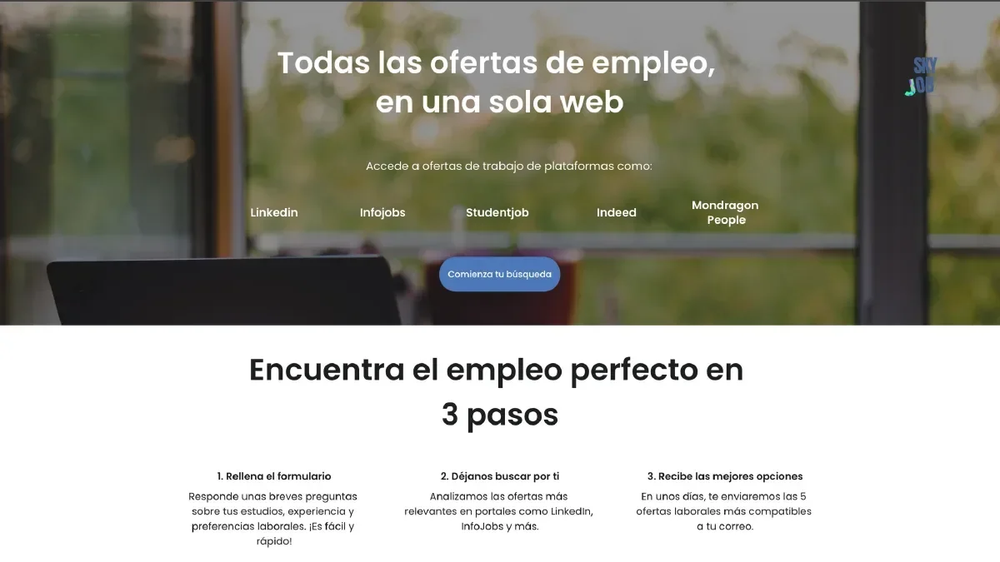
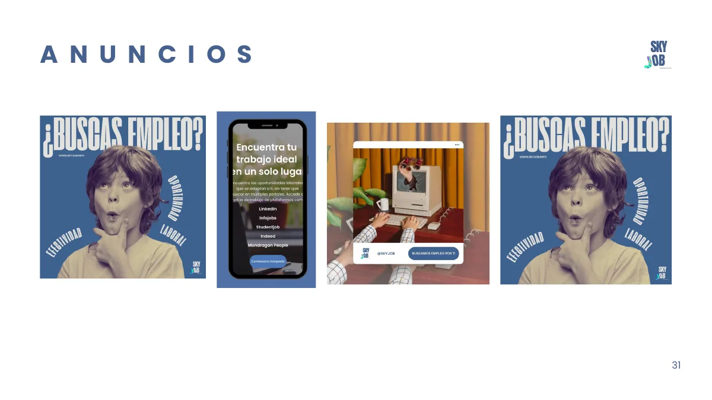

Trabajo de Fin de Grado · Producto digital y validación
Un comparador de ofertas de empleo para jóvenes sin experiencia. Investigué el problema, publiqué una web real, la probé con anuncios y decidí con datos si seguir o parar.
Muchos jóvenes tienen dificultades para encontrar su primer empleo y las empresas no llegan fácilmente a ese talento. El objetivo del proyecto era validar esa problemática, idear una solución y comprobar si funcionaba.
Empecé entrevistando a 20 jóvenes y 10 empresas. Solo el 47 % de los jóvenes se sentía preparado para trabajar, 1 de cada 3 consideraba ineficaces las herramientas de búsqueda, y las empresas decían que hasta el 70 % de los perfiles que reciben por InfoJobs no son adecuados.
Salieron dos posibles problemas: el desaprovechamiento del talento joven y la falta de compromiso de las empresas con él. Hice una segunda ronda con 9 jóvenes y 21 empresas: el 62 % de las empresas decía tener dificultades para encontrar talento joven y el 58 % de los jóvenes veía ofertas que no encajaban con sus intereses.
Los expertos recomendaban una solución más simple y centrada en el joven. La otra idea dependía de colaboraciones externas desde el inicio, así que empezamos por la primera, que se podía validar sin depender de terceros.
Una plataforma que reúne ofertas de varios portales (LinkedIn, InfoJobs…), personaliza los resultados y ahorra tiempo. Analicé la competencia en cuatro categorías (generalistas, especializadas, comparadores y consultoras) para ver dónde estaba el hueco.
Publicamos una web sencilla, "Encuentra el empleo perfecto en 3 pasos", que estuvo online y en la que la gente se apuntó: el usuario rellena un formulario, buscamos por él y le enviamos por correo las 5 ofertas más compatibles, con un segundo correo para recoger su opinión. Para mantener las ofertas actualizadas se usó scraping automático con ZenRows.
Lanzamos cuatro anuncios para llevar tráfico a la web y medir el interés real. Los anuncios en formato post funcionaron mejor que los stories, el proyecto despertó interés incluso en mayores de 35 años y optimizar los mensajes y el formulario mejoraba los resultados.
Calculé ingresos (publicidad, coste por clic y por registro) frente a costes (mantenimiento, scraping, marketing y personal). La conclusión: la necesidad era real, pero los ingresos eran inestables y los costes altos. Decidimos pausar el proyecto por su baja viabilidad a corto plazo y para evitar riesgos personales.

